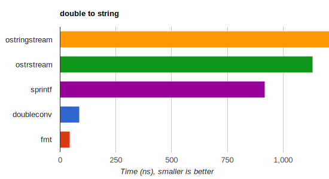

A modern formatting library
Safety
Inspired by Python's formatting facility, {fmt} provides a safe replacement
for the printf family of functions. Errors in format strings,
which are a common source of vulnerabilities in C, are reported at
compile time. For example:
fmt::format("{:d}", "I am not a number");d is not a valid
format specifier for strings. APIs like
fmt::format prevent buffer overflow errors via
automatic memory management.
→ Learn more
Extensibility
Formatting of most standard types, including all containers, dates, and times is supported out-of-the-box. For example:
fmt::print("{}", std::vector{1, 2, 3});[1, 2, 3]Performance
{fmt} can be anywhere from tens of percent to 20-30 times faster than
iostreams and sprintf, especially for numeric formatting.

The library minimizes dynamic memory allocations and can optionally
compile format strings to optimal code.
Unicode support
{fmt} provides portable Unicode support on major operating systems
with UTF-8 and char strings. For example:
fmt::print("Слава Україні!");The default is locale-independent, but you can opt into localized formatting and {fmt} makes it work with Unicode, addressing issues in the standard libary.
Fast compilation
The library makes extensive use of type erasure to achieve fast
compilation. fmt/base.h provides a subset of the API with
minimal include dependencies and enough functionality to replace
all uses of *printf.
Code using {fmt} is usually several times faster to compile than the
equivalent iostreams code, and while printf compiles faster
still, the gap is narrowing.
Small binary footprint
Type erasure is also used to prevent template bloat, resulting in compact
per-call binary code. For example, a call to fmt::print with
a single argument is just a few
instructions, comparable to printf despite adding
runtime safety, and much smaller than the equivalent iostreams code.
The library itself has small binary footprint and some components such as floating-point formatting can be disabled to make it even smaller for resource-constrained devices.
Portability
{fmt} has a small self-contained codebase with the core consisting of just three headers and no external dependencies.
The library is highly portable and requires only a minimal subset of C++11 features which are available in GCC 4.9, Clang 3.6, MSVC 19.10 (2017) and later. Newer compiler and standard library features are used if available, and enable additional functionality.
Where possible, the output of formatting functions is consistent across platforms.
Open source
{fmt} is in the top hundred open-source C++ libraries on GitHub and has hundreds of all-time contributors.
The library is distributed under a permissive MIT license and is relied upon by many open-source projects, including Blender, PyTorch, Apple's FoundationDB, Windows Terminal, MongoDB, and others.